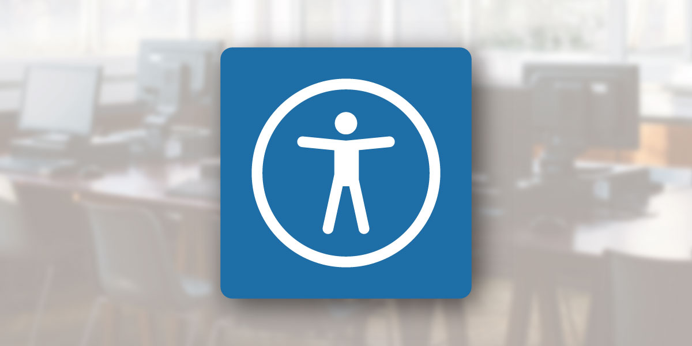

The Importance of Web Accessibility in a College Setting

Robert Laws
Technology & Instruction Librarian
1. What is Accessibility & why it is Important?
What is Accessibility?
-
Enabling as many people as possible to use Web sites, even
when those people's abilities are limited in some way.
MDN Web Docs - Accessibility
Four Principles of Website Accessibility
From the Web Content Accessibility Guidelines (WCAG)
-
Perceivable: Users must be able to perceive it
in some way, using one or more of their senses.
-
Operable: Users must be able to control UI
elements (e.g. clickable buttons, mouse, keyboard, etc.).
-
Understandable: The content must be
understandable to its users.
-
Robust: The content must be developed using
well-adopted web standards that will work across different
browsers, now and in the future.
Why is it Important?
-
Legal Requirements:
American Disabilities Act
(1990) requires organizations to provide “reasonable
accommodations” to employees with disabilities.
-
Maximize Impact: Providing information and
services to more people is good for business.
-
Moral Values: building empathy and improving
the user experience for people with disabilities is a value we
should support.
2. Methods to Understand & Identify Accessibility Issues
Accessibility Guidelines & Checklists
Tools and Resources
-
Online Accessibility Testers
- provides detailed information about all accessibility
standards and their application.
-
Browser Extensions
- a user-friendly checklist of the most important WCAG
guidelines.
Live Examples - Online Accessibility Testers
Live Examples - Browser Extensions
Live Examples - Manual Checking
Teach Staff Accessibility Best Practices
-
Workshops on Accessibility - covering topics:
- color contrast
- images best practices
- alt tags
- logical headings (H1, H2, H3, etc.)
- meaningful hyperlinks
- semantic use of HTML elements (ex. table, lists)
- captions for videos
Provide Support for Staff
-
Provide Resources:
- Documentation on accessibility workflows
-
Communicate with staff members who have questions about
accessibility
-
Add tools within the CMS to help staff when creating content
(ex.
CKEditor Accessibility Checker)
Demonstrate Advanced Accessibility Features
-
Demonstrations that include:
- Skip to Content Links
- Tab Order
- Wai-ARIA tags
- Reduced Motion Options
Test Website for Accessibility
-
Build empathy by sharing the experience of disabled
users:
- Use a screen reader to access the website
- Navigate the website only using a keyboard
- Simulate color blindness